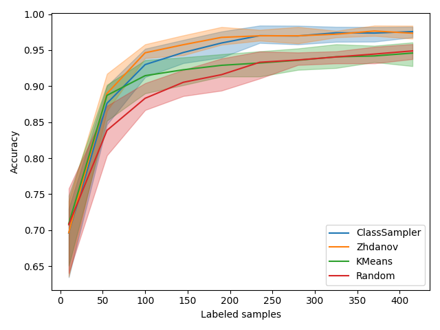
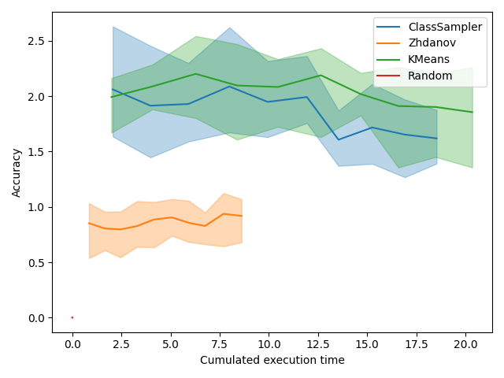

Note
Click here to download the full example code
Active Learning on Digit Recognition with Clustering-based Sampling¶
We here compare several clustering-based Active Learning approaches and in particular explore the trade-off between speed and performance. For this purpose, we use two standard clustering: a simple KMeans and a MiniBatchKMeans. We compare both of them to Zhdanov’s approach proposed in Diverse mini-batch Active Learning. The author introduced a two-step procedure that first select samples using uncertainty and then performs a KMeans.
Those are the necessary imports and initializations
from matplotlib import pyplot as plt
import numpy as np
from time import time
from sklearn.datasets import load_digits
from sklearn.ensemble import RandomForestClassifier
from sklearn.model_selection import train_test_split
from sklearn.cluster import KMeans
from cardinal.uncertainty import MarginSampler
from cardinal.clustering import KMeansSampler
from cardinal.random import RandomSampler
from cardinal.plotting import plot_confidence_interval
from cardinal.base import BaseQuerySampler
from cardinal.zhdanov2019 import TwoStepKMeansSampler
from cardinal.utils import pad_with_random
np.random.seed(7)
The parameters of this experiment are:
batch_sizeis the number of samples that will be annotated and added to the training set at each iteration,n_iteris the number of iterations in the simulation.
We use the digits dataset and a RandomForestClassifier.
batch_size = 45
n_iter = 10
X, y = load_digits(return_X_y=True)
X /= 255.
model = RandomForestClassifier()
A new Custom Sampler¶
Zhdanov preselects beta * batch_size samples using uncertainty sampling
and then uses KMeans to cluster the data in `batch_size clusters and select
the samples closest to the cluster centers. By doing this, a diverse set of
sample with high uncertainty is selected.
We hypothetize that inversing these steps can also be an interesting approach. For that, we first perform a KMeans clustering, and then select within each cluster the most uncertain samples.
class KMeansClassSampler(BaseQuerySampler):
def __init__(self, model, n_classes, batch_size):
self.clustering = KMeans(n_clusters=n_classes)
self.confidence_sampler = MarginSampler(model, batch_size // n_classes)
super().__init__(batch_size)
def fit(self, X_train, y_train):
self.confidence_sampler.fit(X_train, y_train)
return self
def select_samples(self, X):
self.clustering.fit(X)
all_samples = set()
for label in np.unique(self.clustering.labels_):
indices = np.arange(X.shape[0])
mask = np.zeros(X.shape[0], dtype=bool)
mask[self.clustering.labels_ == label] = True
selected = self.confidence_sampler.select_samples(X[mask])
all_samples.update(indices[mask][selected])
return pad_with_random(np.asarray(list(all_samples)), self.batch_size,
0, X.shape[0])
class_sampler = KMeansClassSampler(model, 15, 45)
Core Active Learning Experiment¶
We now compare our class sampler to Zhdanov, a simpler KMeans approach and, of course, random. For each method, we measure the time spent at each iteration and we plot the accuracy depending on the size of the labeled pool but also time spent.
samplers = [
('ClassSampler', class_sampler),
('Zhdanov', TwoStepKMeansSampler(5, model, batch_size)),
('KMeans', KMeansSampler(batch_size)),
('Random', RandomSampler(batch_size)),
]
figure_accuracies = plt.figure().number
figure_execution_times = plt.figure().number
for i, (sampler_name, sampler) in enumerate(samplers):
all_accuracies = []
all_execution_times = []
for k in range(10):
X_train, X_test, y_train, y_test = \
train_test_split(X, y, test_size=500, random_state=k)
accuracies = []
execution_times = []
previous_proba = None
# For simplicity, we start with one sample of each class
_, selected = np.unique(y_train, return_index=True)
# We use binary masks to simplify some operations
mask = np.zeros(X_train.shape[0], dtype=bool)
indices = np.arange(X_train.shape[0])
mask[selected] = True
# The classic active learning loop
for j in range(n_iter):
model.fit(X_train[mask], y_train[mask])
# Record metrics
accuracies.append(model.score(X_test, y_test))
t0 = time()
sampler.fit(X_train[mask], y_train[mask])
selected = sampler.select_samples(X_train[~mask])
mask[indices[~mask][selected]] = True
execution_times.append(time() - t0)
all_accuracies.append(accuracies)
all_execution_times.append(execution_times)
x_data = np.arange(10, batch_size * (n_iter - 1) + 11, batch_size)
x_time = np.cumsum(np.mean(all_execution_times, axis=0))
plt.figure(figure_accuracies)
plot_confidence_interval(x_data, all_accuracies, label=sampler_name)
plt.figure(figure_execution_times)
plot_confidence_interval(x_time, all_accuracies, label=sampler_name)
plt.figure(figure_accuracies)
plt.xlabel('Labeled samples')
plt.ylabel('Accuracy')
plt.legend()
plt.tight_layout()
plt.figure(figure_execution_times)
plt.xlabel('Cumulated execution time')
plt.ylabel('Accuracy')
plt.legend()
plt.tight_layout()
plt.show()
- 
- 
Discussion¶
Accuracies¶
Let’s start by focusing on the figure showing accuracy depending on the number of labeled samples. We observe that regular KMeans is slightly better at the beginning, probably because it is pure diversity and that exploration is best at the beginning. After that, Zhdanov’s method clearly takes over the other methods.
Execution Times¶
Execution time is usually not critical in active learning as the query sampling time is negligible compared to labeling time. However, a significant decrease of query sampling time could allow to train more often and thus increase the accuracy of the model faster.
In the plot showing accuracy depending on execution time, we first see a red bar which is the random sampling. This method is almost instantaneous. We also see that the domination of Zhdanov is even more clear. It is because the two-step approach allows to greatly reduce the number of samples on which the KMeans is performed. The difference is small here because we have a small dataset but on a bigger one, the win can be significant. One can also consider using mini-batch KMeans from scikit-learn that is faster.
Total running time of the script: ( 3 minutes 33.100 seconds)
Estimated memory usage: 19 MB